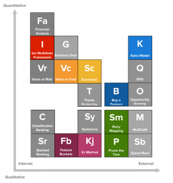
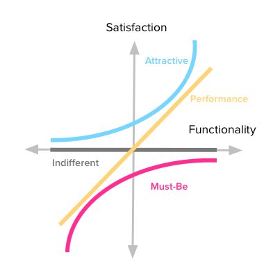
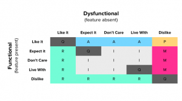
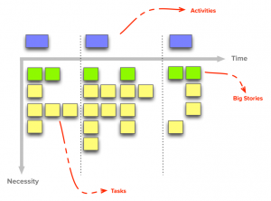
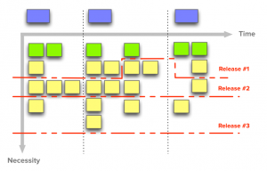
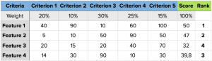
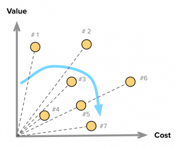

Prioritization is a top concern for most Product Managers. It’s by far one of the most popular topics on PM blogs, Q&A sites and other online communities.
Although it’s not what we are hired to do, it’s something that we have to do to achieve our real goal: creating successful products that bring value to our customers and to the business.
The need to prioritize comes from a very simple fact: we just don’t have enough resources to work on everything we can come up with.
Thus, we need a process to determine the sets (and sequence) of things that should be done on the product to deliver the most value at each point in time, given our constraints.
If we break this statement down, a core group of questions then need to be answered:
- How can we know what’s valuable? How valuable is it? Valuable to whom?
- How can we define the set of things that should go together in a product release? How should we sequence those releases?
- How can we get the necessary buy-in to follow through and get these things to the market?
- How can we know if our assumptions are right? Are we on the right track? Are we really delivering value? Could we do any better?
What this guide is all about
If you search around, you’ll find countless articles with recommendations, techniques and approaches to this very hard problem. However, each method’s usefulness will depend on the specific product or project where it’s applied. Your prioritization needs may vary vastly.
Here’s what you will get from this guide covering popular product prioritization techniques:
- A map, in the form of a Periodic Table to help you make sense of what each technique has to offer;
- An overview of each method, with graphics and links to more in-depth resources;
- 5 commonalities and takeaways from all these methods.
The Periodic Table of Product Prioritization Techniques
When I started working on this guide, I immediately felt the need to visually organize all of these techniques in a way that made sense and showed the context in which each of them is valuable.
With this mind, I found two dimensions that fulfilled these requirements and the result was the sort of Periodic Table you see below.

A full version of this guide is available at my website, Folding Burritos, which includes descriptions of all 20 techniques included in the table. For this post, I have selected the 9 methods I use most frequently:
- The Kano Model
- Buy a Feature
- Story Mapping
- Prune the Product Tree
- Scorecard
- KJ Method
- Value vs. Cost
- Feature Buckets
- Ian McAllister’s Framework
The horizontal axis tracks how oriented a method is towards getting input from the inside or the outside world. In other words, how much it depends on data and opinions from people external to the core product development team.
This dimension reflects the fact that sometimes you need involvement from the outside (e.g. end customers or stakeholders within the company) to help you prioritize. However, in other cases you might want to follow a simpler process with the development team or by yourself.
The vertical axis shows how quantitative is the method prescribed by each technique. That is, how much of it is based on expert (personal) opinions instead of some kind of metric, classification, voting or ranking.
Some people feel more comfortable around quantitative approaches and being supported by numbers (either for themselves or for people “higher-up”). In other instances, you need to work on the qualitative side if what you’re trying to achieve is not quantifiable or if it doesn’t make sense in your context.
Every technique was placed in the table taking into consideration what I believe to be their relative positions along these two dimensions. Individual locations might be debatable, but I think this is a good starting point to navigate them.
The next section presents an overview of each technique, including pointers to other relevant and in-depth resources.
The Kano Model
Noriaki Kano, a Japanese researcher and consultant, published a paper in 1984 with a set of ideas and techniques that help us determine our customers’ (and prospects’) satisfaction with product features. These ideas are commonly called the Kano Model and are based upon the following premises:
- Customers’ satisfaction with our product’s features depends on the level of functionality that is provided (how much or how well they’re implemented);
- Features can be classified into four categories;
- You can determine how customers feel about a feature through a questionnaire.
1. Satisfaction vs. Functionality
Kano proposes two dimensions to represent how customers feel about our products:
- one that goes from total satisfaction (also called Delight and Excitement) to total dissatisfaction (or Frustration);
- and another called Investment, Sophistication or Implementation, which represents how much of a given feature the customer gets, how well we’ve implemented it, or how much we’ve invested in its development.
2. The Four Categories of Features
Features can fall into four categories, depending on how customers react to the provided level of Functionality.

- Performance
Some product features behave as what we might intuitively think that Satisfaction works: the more we provide, the more satisfied our customers become. - Must-be
Other product features are simply expected by customers. If the product doesn’t have them, it will be considered to be incomplete or just plain bad. This type of features is usually called Must-be or Basic Expectations. - Attractive
There are unexpected features which, when presented, cause a positive reaction. These are usually called Attractive, Exciters or Delighters. - Indifferent
Naturally, there are also features towards which we feel indifferent. Those which their presence (or absence) doesn’t make a real difference in our reaction towards the product.
3. Determining how customers feel through a questionnaire
In order to uncover our customer’s perceptions towards the product’s attributes, we need to use the Kano questionnaire. It consists of a pair of questions for each feature we want to evaluate:
- One asks our customers how they feel if they have the feature;
- The other asks how they feel if they did not have the feature.
The first and second questions are respectively called the functional and dysfunctional forms. To each “how do you feel if you had / did not have this feature,” the possible answers are:
- I like it
- I expect it
- I am neutral
- I can tolerate it
- I dislike it
For each answer-pair, we use this table to determine the category where the respondents falls, letting us know how he or she feels about the feature.

From the individual responses and resulting categories you can go into two levels of analysis:
- Discrete: each answer-pair is classified using the table above and feature’s category will be the most frequent across all respondents;
- Continuous: each functional and dysfunctional answer gets a numerical score, which can then be averaged over all respondents and plotted on a 2D graph.
As a general rule of thumb, features should be prioritized such that this order is followed: Must-Be > Performance > Attractive > Indifferent.
There are a lot more details that are worth exploring about this method. I wrote an extensive, in-depth guide to the Kano model that explains the entire process and gives you a step-by-step guide on how to use it.
Buy a Feature
Buy a Feature is a fun innovation game that can be played collaboratively or individually. Here’s how it works:
A set of features that need to be prioritized are presented to a group of buyers (our customers);
- Each buyer gets a budget of play money to spend on features;
- Each feature is priced according to some measure of cost (complexity, effort, actual cost to develop, etc.) — as long as it’s the same criteria for all features, you can use any one you prefer;
- Each player’s budget should be between a third to half of the total cost for all features;
- It’s possible to play the game in one of two ways:
- Individually — Players are told to use their budget to buy the features that are most important to them;
- Collaboratively — Using a pricing scale that makes some features too expensive for individual buyers to purchase. This forces collaboration and negotiation between players to buy features that are valued by multiple players.
- As players buy features, collect the money and ask them to explain why they’re buying it;
- The game ends when the money runs out or when players have bought all the features they’re interested in (explain to them beforehand that it’s OK for money to be left over).
This will yield a valuable set of insights on the most important features for customers, as we can analyze which features got bought the most, the reasons for their purchase and which collaborative bids were made on expensive items.
To get more data, multiple instances of the game can be played (in groups of 8 people at most). Also, for large feature sets, you can set up a championship where popular features are bubbled up through multiple phases of games.
Buy a Feature is best played in person due to its collaborative character, but there are online solutions if that’s what you need.
Check out this article for a more detailed game explanation and templates for feature cards and play money notes.
A side-note for Project Managers
This method is also very useful for internal or consulting projects that are not exposed to the market, by involving stakeholders as the buyers in the game. It’s a great way to build strategy for the project, consensus on what’s most important, and communicate to stakeholders the notion that features have different development costs.
Story Mapping
Story Maps were first introduced by Jeff Patton in this 2005 article and followed-up by another one writing up his more recent experience. Both are excellent reads that I can’t recommend highly enough.
The main idea behind Story Maps is that single-list product backlogs are a terrible way to organize and prioritize the work that needs to be done. A richer structure is necessary.
In very broad strokes, a Story Map is organized like this:
- There’s a horizontal axis that represents usage sequence;
- User stories (or “tasks”) are placed along this axis, in the sequence in which they are performed by the user;
- The vertical axis stands for criticality;
- User stories (or “tasks”) are arranged vertically as to how important they are (from top to bottom);
- Equally important stories can be kept at the same height, but keep in mind that, in general, it’s important to differentiate stories’ relative importance to be able to create better release plans.
- Groups of related user stories can be grouped as Activities:
- Create a vertical line to separate groups of stories from others;
- For example, an activity may be “managing email,” with “send an email to one or more addresses” being a user task;
- Activities sit above the vertical axis and don’t have any usage sequence, they “just are” — these activities compose the major attributes for the product and can’t be prioritized (think “you can’t prioritize a car’s motor over its wheels”)

There are many advantages to this kind of backlog organization, but the most relevant to prioritization and execution are these:
- It’s a visual tool that lets customers, stakeholders and development team members share a common understanding of what the system does;
- It very clearly defines how to incrementally release product iterations that deliver complete working releases with increasing sophistication — this is Alistair Cockburn’s concept of the walking skeleton.
- To define releases, create horizontal lines along the map, selecting stories with equivalent criticality levels;
- This leads to complete end-to-end versions of the product and consequently to faster delivery and market validation (crucial at the MVP stage.)

In my personal opinion, the main drawback for this structure (and the necessary time investment to create and groom it) is that it’s too heavy for projects or products in highly dynamic contexts. That is, when visibility into the future shape of the product is not great (e.g. sub 3 to 6 months), I prefer a different (but related) approach.
Prune the Product Tree
Another innovation game from Luke Hohmann. Prune the Product Tree is about shaping the product’s direction towards market needs, but also understanding if some product areas are being left behind.
The analogy in the game is that the product is a tree that will be pruned to our liking. Although gardeners do this by cutting parts of the tree, the goal is to shape — it’s not about the cutting.
Here’s how it works:
- Draw a large tree on a whiteboard or sheet of paper;
- Thick limbs represent core product areas and its outermost branches represent currently available features;
- Write potential new features on some Post-It notes;
- Ask customers and stakeholders to place their desired features on the tree, thus defining its next phase of growth.
From here you may extract valuable data points. Is the tree growing in a balanced way? Are specific areas growing disproportionately larger? Are previously under-developed areas growing now?
Having a shared view of the entire span of the product with customers can be very insightful when planning new releases. From this visual balance you derive relative value among features, understand which strategic shifts might need to be done and which areas of the product are good candidates for being dropped in the future.
Scorecard
The Scorecard is another popular technique. The goal is to prioritize features over a set of criteria that have been negotiated with stakeholders. Here’s Daniel Elizalde’s sensible take on the subject:
- Start with a clear strategy that has been validated by users;
- Select the features that are most related to the overall strategy for the next release;
- Define a criteria and weights for scoring;
- Meet with stakeholders and fine-tune the criteria and weights;
- Go over all candidate features/themes and assign a score (e.g. from 1 to 100) on their respective impact for each criterion.

Another way to allow full use of the point scale is to identify a feature/theme that is considered to be in the middle of it for each criterion. Then, score all other features in comparison to that one; a shorter scale (from 1 to 5) will work best in this approach.
The scorecard can be a useful exercise for companies to evaluate what they believe is the relative impact on strategic objectives for a group of possible new features.
There is however very valid criticism for this method:
- Is it scoring the right things? (i.e. are scoring categories really aligned with the product strategy?)
- Are weights and scores “cooked” to prioritize features already favored by opinion and politics, while at the same time give the appearance of objective analysis?
- It can lead to fragmented products, unfocused from their Unique Value Proposition.
KJ Method
One final Japanese technique in this overview. The KJ Method is a technique devised by Jiro Kawakita as a group process to establish priorities. It quickly produces “objective group consensus out of a collection of subjective, opinionated data.” It’s on the Internal side of techniques as the way its usage is described is mostly targeted at stakeholders within the same organization.
UIE describes an 8-step process for any group size in under an hour. First, ensure you have the following preconditions:
- Removable sticky notes in two colors;
- Room with lots of wall space;
- One person to be the facilitator (moving the group from one step to the next);
- Whiteboard or flip-chart for the final ranking step.
With all of the above, the facilitator follows this process:
- Determine a Focus Question. The focus question drives the results. Every session will have its own focus question (e.g. “Who are our users?” or “What goals do users have when they come to our site?” etc.)
- Organize the Group. People in the group should be from different parts of the organization, to get more diverse perspectives.
- Put Opinions (or Data) onto Sticky Notes. Putting one item on each sticky note, each group participant is asked to brainstorm as many items as they can think of.
- Put Sticky Notes on the Wall. Each participant puts their sticky notes up on the wall in random order. They also read other people’s contributions. If they think of something else that should go on the wall, at any time, they can just add it to the collection.
- Group Similar Items. Once everyone has added their contributions to the wall, the facilitator instructs the group to start grouping similar items in another part of the room.
- Naming Each Group. Each participant is asked to assign a name to every group, using the second color of sticky notes.
- Voting for the Most Important Groups. Participants are asked to individually use their own viewpoint to choose which groups he or she believes are most important to answering the focus question.
- Ranking the Most Important Groups. This is the final and most important step. All individual sticky notes are placed on the whiteboard and ordered by number of votes. Participants can combine similar groups, which adds their votes and moves them up the ranking. When three to four groups have much higher ranking than the rest, the facilitator may stop the exercise.
Because of the combination of free individual opinion through voting and the enforced unanimous consensus in the final step, this method can quickly converge to a group buy-in of priorities. This helps any teams that depend upon stakeholders’ participation and agreement on the product strategy and priorities.
Value vs. Cost
This is a very common prioritization technique with the advantage of also being very simple. Features are scored on their Value and Cost of implementation. Those with the best ratios will have higher priority.
Also called bang for the buck, the inherent ROI-like analysis in this method feels intuitive and is also embedded within other prioritization techniques.
The main goal with this method is that we try to maximize value delivery over time. That is, for a given release timeframe, we work on the most valuable items we can fit in the period.
To visualize this technique, use a Value vs. Cost graph. Scatter plot all features being considered, with regards to their score in each dimension. Then, prioritization rankings will be visible as the slopes of the lines going from the origin to each feature. The higher the slope, the higher the priority.

However, one thing to look out for is the tendency to prioritize low-cost, low-value items (which have good Value/Cost ratios). As Teresa Torres writes:
“If you use time-to-build to prioritize what to build next, you’ll end up with a product full of easy solutions.”
As usual, just carefully consider what comes out of prioritization methods and use them as guidelines and not definitive answers.
Feature Buckets
The Feature Buckets technique by Adam Nash is also very popular on Quora.
Adam believes that feature prioritization varies a lot across different product types and industries and that’s why he emphasizes that this technique was thought specifically for consumer internet products.
Feature concepts should be placed in one of four buckets:
- Metrics Movers — Features that will move the target business and product metrics significantly. There should be specific goals and strategies behind the decision to invest in a product or feature (things like AARRR metrics come in handy here);
- Customer Requests — These are features that have been requested directly by customers. They are usually incremental enhancements, but it’s important to consider them or else risk alienating users or miss important feedback coming from their usage of the product;
- Delight — Innovative features that are internally generated based on insights in design or technology. Working on surprising and exciting features is important to delight customers and create a differentiated position in the market (c.f. Kano Model for more on this);
- Strategic — Features that are included for strategic reasons related to learning or future goals (e.g. experimentation and data gathering).
A well-balanced product release should typically include features from all of these buckets. The framework is not explicit as to the appropriate distributions among these buckets and to how to prioritize internally within each. These implementation details are left up to the Product Manager to define.
Ian McAllister’s Framework
I don’t think this framework has an official name (hence the uncreative one I’m using). Given its author’s experience and the huge popularity it has on Quora, it’s well worth including in this overview. Here’s how it works:
- Define the important themes for the product or business
Create a list of the most important themes (e.g. customer acquisition, engagement, activation, ARPU) and select the top three. - Prioritize and resource the themes
Define the relative priority for each theme and how much resources you want to invest in each (team members, marketing, etc.) - Generate project ideas
Use projects ideas you already have for each theme and come up with new ones. Keep in mind the Pareto principle and focus on the 20% of the project that will get you to 80% of the desired outcome. - Estimate each project’s potential impact
Work out the impact you expect from each project, in very broad terms (think order-of-magnitude-similar.) - Estimate each project’s costs
With your team’s (and relevant stakeholder’s) help, come up with an estimation for each project’s costs. - Prioritize project within each theme
Set priorities considering the projects with the best impact-to-cost ratios.
You should check out Ian’s original answer for more details and to read about the multiple benefits he finds in this framework. Out of those, the one that jumps out to me as the most useful is to resource themes independently. That is: pick the important themes and assign team members and other resources beforehand. This sets you free from constantly struggling to prioritize very different themes that you may be developing in parallel.
Key Takeaways
After going through all of these techniques you will have probably noticed that they each have contexts in which they make sense to be used and others when they don’t. As much as we’d like to, there are no prioritization silver bullets and we have to choose whatever is more appropriate for our product, team, industry, etc. At the same time, there are important commonalities among these methods that are worth pointing out.
Let’s go over the most important takeaways from this fascinating task we call Prioritizing.
1. Prioritize at a high-level
Essentially all prioritization methods work with high-level features (themes) and user goals. This is important for a couple of reasons:
- The focus is on providing value to the user and not the minutia (at least at first);
- You don’t waste as much time if/when the strategy changes;
- After working out the strategy and high-level priorities, the team should take care of finding the best tactics to get there.
2. Set goals, measure and adjust
Another common characteristic among many techniques is their focus on Effectiveness. They have an underlying notion that our motivation to prioritize is that we’re going after some goal with a measurable effect (impact, ROI, usage, improved business metric, etc.).
The objective is not to set priorities and ship them. The objective is to constantly be aware if what we’re doing is really adding value and working out as expected; when it’s not, we will at least have some clues as to what needs adjustment.
3. Don’t do it alone
Prioritization should not be a solo effort. With the exception of very simple methods, almost all of them involve someone else in the process. Be they customers, stakeholders or team members, it’s very rare that the Product Manager alone will set the overall priorities. We’re just in charge of a process and the product belongs to the team.
Getting the most external input we can gets us buy-in and confidence that what gets prioritized is effectively valuable. And even then, we’re only sure after measuring the actual results.
4. Quantitative vs. Qualitative
Quantitative does not mean better than qualitative (and vice-versa). For instance, a common pitfall when using quantitative prioritization methods is that people associate numbers with precision and confidence. Seeing formulas, ratios and rankings usually makes us feel more assured as to the robustness and objectivity of some type of analysis, but these can be gamed. You should keep this in mind both for yourself and when presenting results to other people — these things are guidelines and not infallible outcomes.
Know what you’re getting out of the method and when to use it. These things are tools, not oracles.
5. External vs. Internal
The External and Internal distinction that we’ve used in this guide relates to how much external involvement there is in the prioritization process. The scale goes something like this: You < Team < Stakeholders < Customers.
Again, it all depends on the results you’re trying to get. I’ve personally found it useful to think about it in these terms:
- External techniques are better for prioritizing abstract outcomes;
- Internal techniques are better for prioritizing concrete solutions.
The value of External techniques
In broad terms, external techniques are most useful when you’re trying to navigate through a large set of candidate features, looking to:
- Identify the most valuable ones for your customers – knowing their baseline and performance expectations and also what delights them;
- Getting buy-in and consensus from a group of key stakeholders in larger organizations;
- Gauging which features are not bringing value or actively displeasing customers so you can decide whether to improve or to drop them;
- Getting clients in consulting projects to participate and sign-off on the development strategy and release plan.
Since you’re dealing mostly with “the outside world” is only natural that discussions and prioritization here happen at a more abstract level of user outcomes, goals and high-level features.
The value of Internal techniques
Because you’re involving people that are closer to the product and technology, these techniques are best for prioritizing among more concrete and problems. That is, they’re less exploratory as end users are less involved (if at all). Thus, they work best whenever you have to:
- Further refine the results obtained from one of the more externally oriented techniques;
- Prioritize a set of features and ideas that you’re confident are aligned with the product strategy and customers’ expectations;
- Work on internal projects without much (or no) contact with the market;
- Quickly prioritize low level features and requirements.
With all of these techniques and takeaways in hand, it’s now up to you. Mix and match them. Make changes. But above all, go out and build great products.
This is a condensed version of Daniel Zacarias’ epic guide, 20 Product Prioritization Techniques: A Map and Guided Tour. To read the full guide (or download a PDF version), visit Folding Burritos. Daniel also wrote an awesome guide to The Kano Model. You should read that, too.
Once you’ve figured out the prioritization technique(s) for you, start applying it to your roadmap. Use our customizable template library to get started.